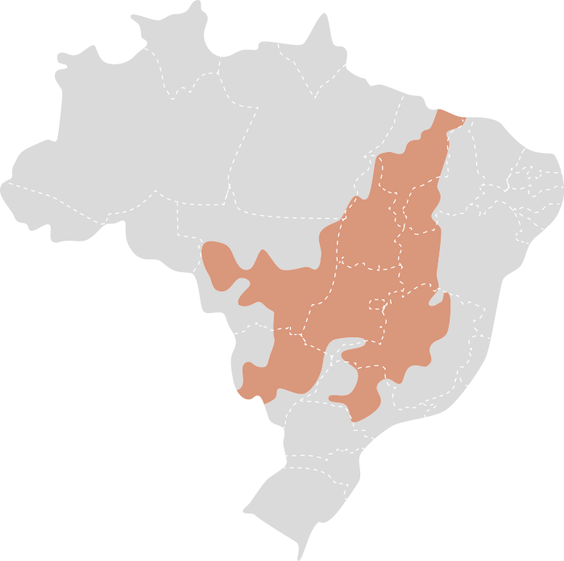

Bioma Cerrado
O Cerrado é um dos biomas mais extensos do Brasil e é caracterizado por uma vegetação de savana tropical.
Localizado predominantemente no centro do país, o Cerrado é um ecossistema essencial tanto para a biodiversidade
quanto para a regulação climática. Sua vegetação e fauna únicas, bem como suas condições ambientais, fazem do
Cerrado uma região de grande importância ecológica e científica.

Características Principais:
-
Vegetação
- Vegetação de Savana: O Cerrado é conhecido por sua vegetação de savana, que inclui
uma
combinação de árvores esparsas, arbustos e gramíneas. As árvores, geralmente de pequeno a médio
porte,
incluem espécies como o pequizeiro e o jatobá, que são adaptadas às condições de solo e clima do
bioma.
- Arbustos e Gramíneas: A vegetação é dominada por arbustos e gramíneas que são
adaptados ao
fogo, um componente natural e necessário para a manutenção do ecossistema. Muitas espécies de
gramíneas têm
raízes profundas para resistir à seca.
-
Clima
- Tropical com Estações Definidas: O clima do Cerrado é tropical, com uma clara
divisão entre
a estação seca e a chuvosa. A estação chuvosa ocorre geralmente entre outubro e abril, enquanto a
estação
seca vai de maio a setembro. As temperaturas são elevadas durante o ano todo, com médias que variam
entre
20°C e 30°C.
- Precipitação: A precipitação anual no Cerrado varia entre 1.200 mm e 1.800 mm,
concentrada
na estação chuvosa. A estação seca é marcada por baixos níveis de umidade, que influenciam a
vegetação e os
ciclos ecológicos.
-
Hidrografia
- Rios e Bacias: O Cerrado é a principal fonte de água para várias bacias
hidrográficas
importantes no Brasil, incluindo a bacia do Rio São Francisco e a bacia do Tocantins-Araguaia. Os
rios e
córregos da região são essenciais para a manutenção dos ecossistemas e para o abastecimento de água
em
várias regiões do país.
- Áreas de Várzea e Córregos Temporários: Além dos rios perenes, existem áreas de
várzea e
córregos temporários que são importantes para a biodiversidade local, especialmente durante a
estação
chuvosa.
-
Biodiversidade
- Fauna: A fauna do Cerrado é diversa e inclui uma variedade de espécies adaptadas às
condições secas e ao ambiente de savana. Entre os animais encontrados estão o lobo-guará, o
tamanduá-bandeira, a onça-pintada e diversas espécies de aves e répteis. O bioma é também conhecido
por sua
rica diversidade de insetos.
- Flora: A flora do Cerrado é igualmente rica e inclui uma variedade de plantas
adaptadas ao
fogo e à aridez. Além das gramíneas e arbustos, há árvores como o ipê e o catingueiro, que são
características da região.
-
Importância Ecológica
- Regulação Climática: O Cerrado desempenha um papel crucial na regulação do clima
regional.
Suas vegetações ajudam a manter o equilíbrio hídrico e a estabilizar o clima local através da
evapotranspiração.
- Biodiversidade e Conservação: Como um dos hotspots de biodiversidade, o Cerrado
abriga
várias espécies endêmicas e ameaçadas. A preservação desse bioma é essencial para a conservação da
biodiversidade e dos processos ecológicos.
-
Ameaças
- Desmatamento e Expansão Agrícola: O Cerrado enfrenta ameaças significativas devido
ao
desmatamento e à expansão agrícola. A conversão de áreas de Cerrado em pastagens e terras agrícolas
tem
levado à perda de habitat e à redução da biodiversidade.
- Mudanças Climáticas: As mudanças climáticas estão alterando os padrões de
precipitação e
aumentando a frequência e intensidade das secas, o que pode impactar negativamente a vegetação e a
fauna do
Cerrado.
O Cerrado é um bioma de extrema importância para o Brasil, oferecendo serviços ecológicos vitais e
abrigando uma
rica diversidade de vida. A conservação deste ecossistema é crucial para manter o equilíbrio ambiental e
garantir a sustentabilidade dos recursos naturais para as gerações futuras.